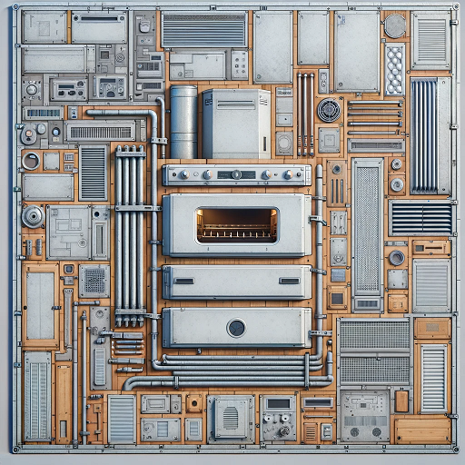

This example is kept mostly as a lesson learned to do your research before writing code.
In Blender one of my favorite workflows for making Albedos is to take a source image, project it on a plane and extrude it in various ways to make a 3D mesh. The problem: you end up with a UV map absolutely riddled with overlapping coordinates. Additionally, you might end up using a very small fraction of the source image in your model. So, I set about making a script that would take in UV coordinates and a source texture and output them as a single, condensed UV texture.
The scripts record the UV coordinates before and after blender packs them, then uses that data to slice apart the original image like a jigsaw into an efficient UV texture.
It even kind of works! It runs into issues with corners. Also, the script provides no padding for the polygons, so you typically get visible seams on your mesh.
The lesson learned afterwards: Blender already does this out of the box. It's called UV Baking.
I've open sourced a small addon that makes the UV baking process much faster!Example input (From Dall-e 3):
Model (Eyeballed UV projections by hand):
The resulting UV packed texture:
The script comes in two parts. One is run in Blender to output the UV coordinates, and the other to do the image slicing which is run as a standalone python script.
import bpy
obj = bpy.context.object
mat = obj.material_slots[0].material
reduceFactor = 1
if mat and mat.use_nodes:
for node in mat.node_tree.nodes:
if node.type == 'TEX_IMAGE':
original_image = node.image
break
tex_w, tex_h = original_image.size
def get_mesh_uvs(mesh, factor = 1):
uv_layer = mesh.uv_layers.active.data
faces = []
for poly in mesh.polygons:
uvs = []
# Loop through each vertex in the face
for loop_index in poly.loop_indices:
print(factor)
uvs.append({
"x": int(uv_layer[loop_index].uv.x * (tex_w / factor)),
"y": int(uv_layer[loop_index].uv.y * (tex_h / factor))
})
faces.append({
"face": poly.index,
"uvs": uvs
})
return faces
# Get the UV coordinates before packing
mesh = obj.data
before_faces = get_mesh_uvs(mesh)
# pack UV islands
bpy.ops.object.mode_set(mode='EDIT')
bpy.ops.mesh.select_all(action='SELECT')
bpy.ops.uv.pack_islands(
rotate=False,
margin=0.001,
scale=True,
merge_overlap=False,
)
bpy.ops.object.mode_set(mode='OBJECT')
after_faces = get_mesh_uvs(mesh, reduceFactor)
# dictionary to hold the UV coordinates
uv_coords = {
"orig_w": tex_w,
"orig_h": tex_h,
"new_w": int(tex_w / reduceFactor),
"new_h": int(tex_h / reduceFactor),
"before": before_faces,
"after": after_faces
}
import json
print(json.dumps(uv_coords))
from PIL import Image, ImageDraw
port json
read json from thingie.json
th open('coords.json') as json_file:
data = json.load(json_file)
w = data["orig_w"]
h = data["orig_h"]
w = data["new_w"]
h = data["new_h"]
fore_faces = data["before"]
ter_faces = data["after"]
create a PIL image from the blender image
l_img = Image.open("unpacked.png")
nal_img = Image.new('RGB', (n_w, n_h))
fill final_img with the average color of pil_img
erage_color = pil_img.resize((1, 1)).resize((n_w, n_h))
nal_img.paste(average_color)
r before_face, after_face in zip(before_faces, after_faces):
mask = Image.new("L", (o_w, o_h), 0)
draw = ImageDraw.Draw(mask)
# draw a polygon mask and grab the old pixels
before_polygon = [(uv["x"], o_h - uv["y"]) for uv in before_face["uvs"]]
draw.polygon(before_polygon, fill=255)
face_image = Image.composite(pil_img, Image.new('RGB', (o_w, o_h)), mask)
# keep only the pixels inside the mask
face_image = face_image.crop(face_image.getbbox())
# paste face image to fit new packed UV coordinates
after_polygon = [(uv["x"], uv["y"]) for uv in after_face["uvs"]]
after_polygon = [(x, n_h - y) for x, y in after_polygon]
# find the upper left corner of the new face
min_b_x = min([x for x, y in before_polygon])
min_b_y = min([y for x, y in before_polygon])
max_b_x = max([x for x, y in before_polygon])
max_b_y = max([y for x, y in before_polygon])
min_a_x = min([x for x, y in after_polygon])
min_a_y = min([y for x, y in after_polygon])
max_a_x = max([x for x, y in after_polygon])
max_a_y = max([y for x, y in after_polygon])
face_image = face_image.resize((max(max_a_x - min_a_x, 1), max(max_a_y - min_a_y, 1)), resample=Image.NEAREST)
final_img.paste(im=face_image, box=(min_a_x, min_a_y))
export the final image as png
nal_img.save("final.png")